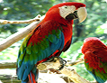
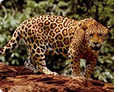
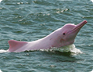
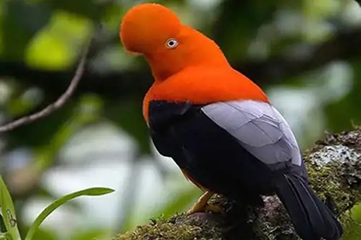
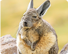
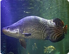
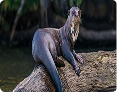
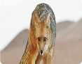

-

Guacamayo Rojo
📍 Tambopata, Madre de Dios
-

Jaguar
📍 Manu, Madre de Dios
-

Delfín Rosado
📍 Río Amazonas, Iquitos
-

Gallito de las Rocas
📍 Parque Nacional Yanachaga Chemillén
-

Vizcacha Peruana
📍 Parque Nacional Huascarán
-

Paiche
📍 Río Amazonas, Iquitos
-

Nutria Gigante
📍 Río Madre de Dios, Madre de Dios
-

Zorro Andino
📍 Parque Nacional Huascarán
Registro
Guacamayo Rojo
Sergio E. registró Guacamayo rojo · Bosque de Zárate
📍 Tambopata, Madre de Dios
Ubicación
📍 Bosque El Olivar
Lat: -12.0464
Lng: -77.0428